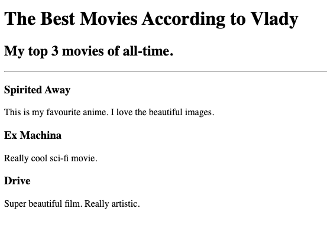
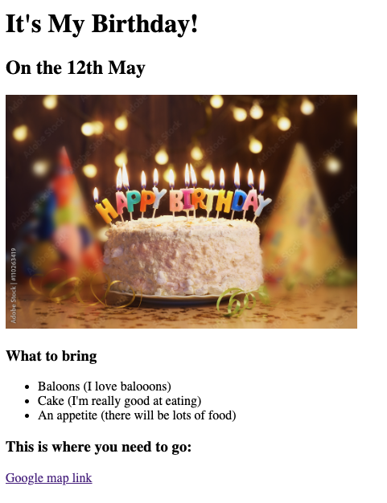

Vlady's first small steps into WebDev.
Project 1: Favourite Movies!

Click on the screenshot above to open the project page!
Project 2: Birthday invite!

Click on the screenshot above to open the project page!